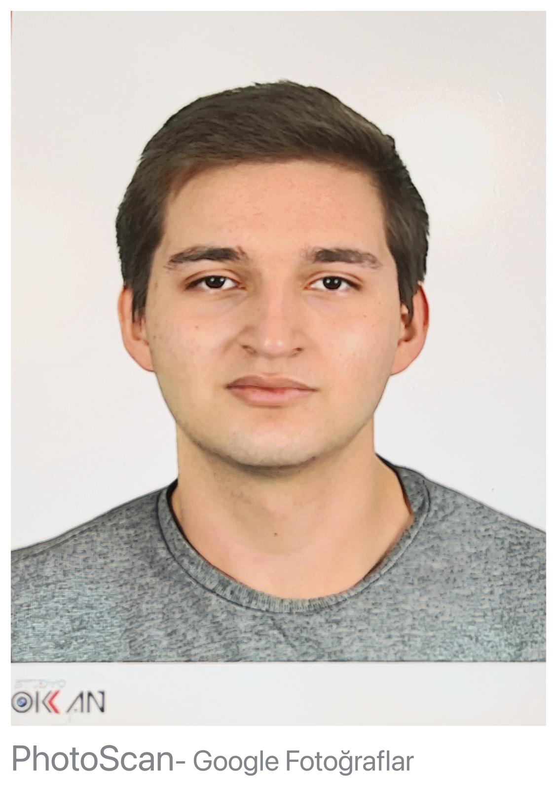

Yaz 2026
PCB Tasarım Stajyeri — ASSUVA
- STM32H743VIT6 mikrodenetleyici tabanlı, genel amaçlı bir geliştirme kartı tasarladım.
- Hava savunma sanayinde donanım tasarım süreçlerini yakından deneyimledim.
Bilgisayar Mühendisliği Öğrencisi · Erciyes Üniversitesi
// yapay zeka · çoklu ajan sistemleri · gömülü sistemler
Projelerime göz at >
EDYapay zeka, çoklu ajan sistemleri (Multi-Agent Systems), web ve mobil uygulama geliştirme alanlarında projeler üreten 3. sınıf Bilgisayar Mühendisliği öğrencisiyim.
Profesyonel yazılım mimarisi ve güvenli kodlama prensiplerini benimseyerek modern teknolojilerle yenilikçi çözümler tasarlamaya çalışıyorum. Yenilikçi ekiplere değer katmak ve sektörel deneyim kazanmak için staj fırsatları arıyorum.
TÜBİTAK 2209-A desteği
Bilgisayar Mühendisliği (Lisans) · 3. Sınıf
Staj ve projeler için bana ulaşabilirsiniz.